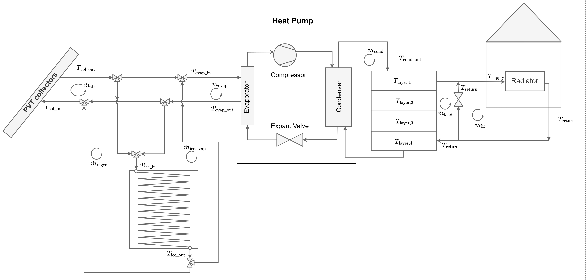
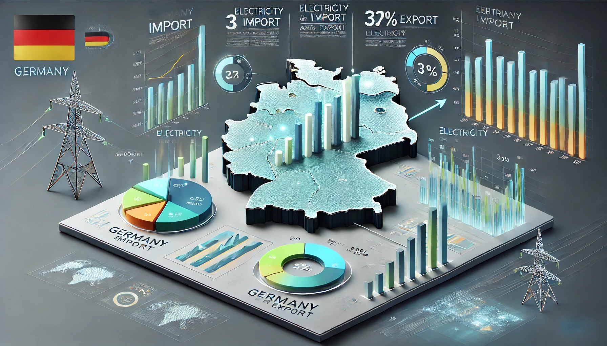
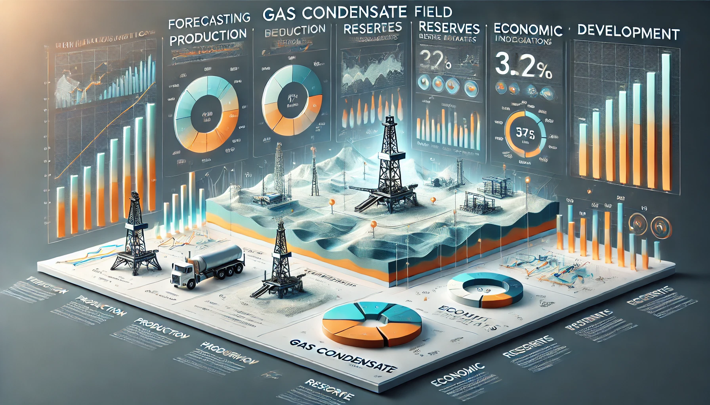

Projekte
Ich war an verschiedenen Projekten beteiligt, die fortschrittliche Modellierung mit praktischen Anwendungen verbinden. Zu den wichtigsten Projekten zählen:
1. MI-NMPC des Heizsystems
Modellprädiktive Regelung eines Wärmepumpensystems mit PVT-Kollektoren und Eisspeicher
2. Datenanalyse
Datenanalyse des deutschen Stromimports und -exports
3. Prognose der Schlüsselfaktoren
Prognose wichtiger Indikatoren für die Entwicklung von Gaskondensatfeldern